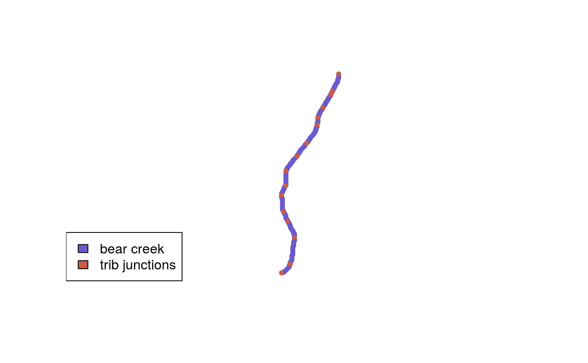
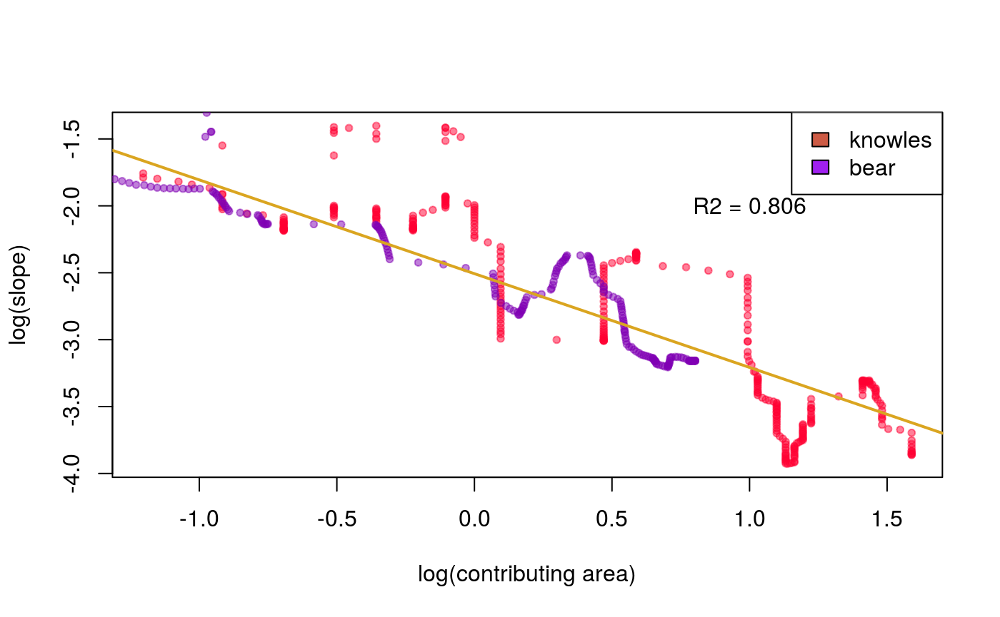
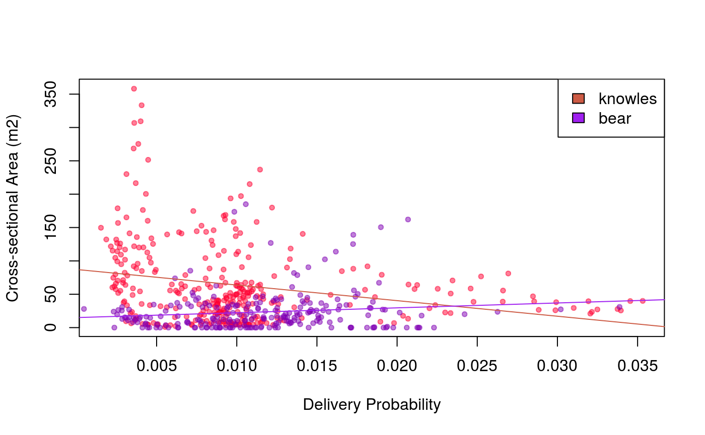
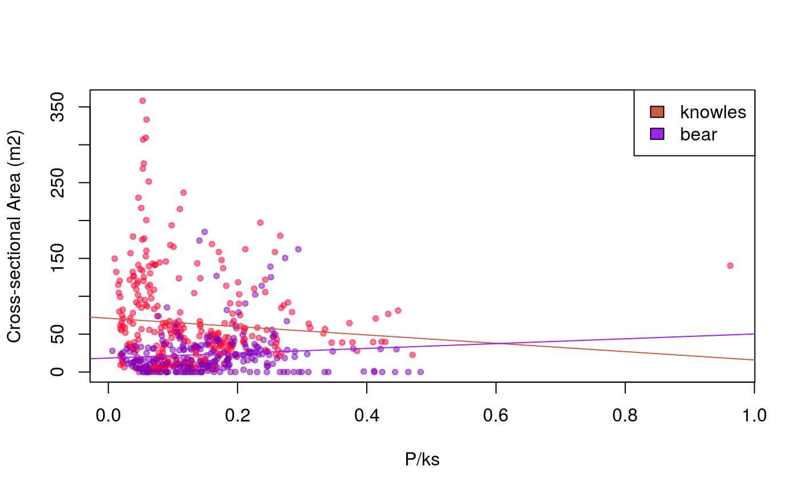
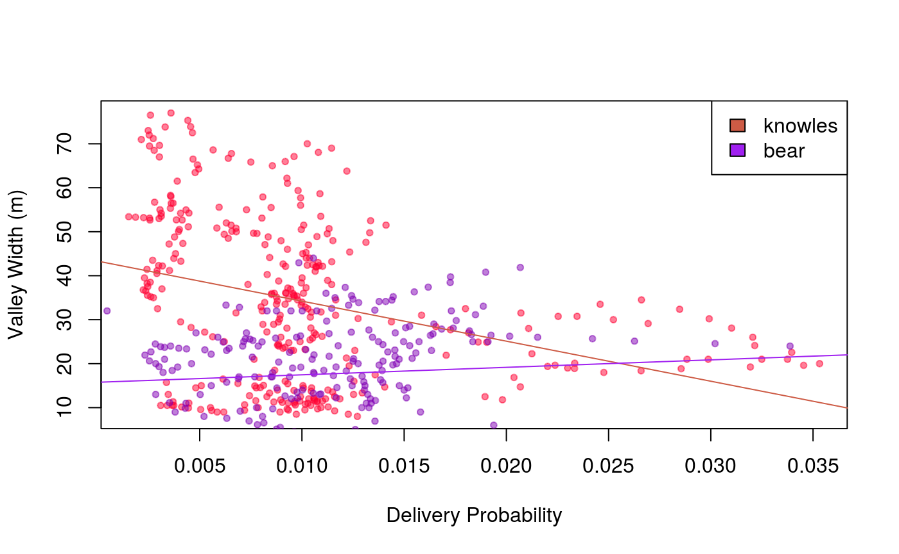
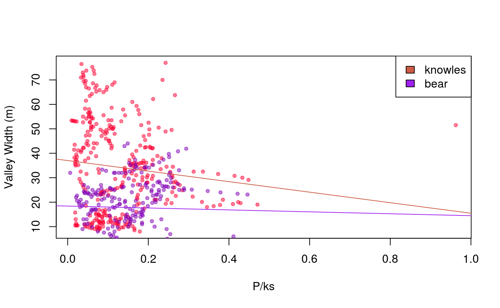
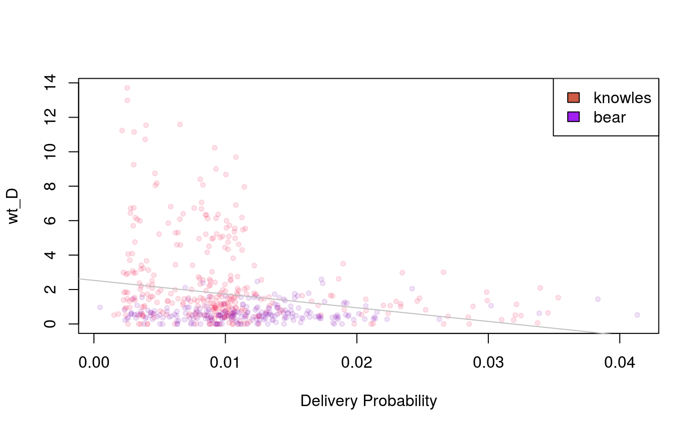

summer2019_update
Erik Rose
2019-09-05
summer2019_update.RmdSummer Update
This research makes use of delivery probabilities estimated by the Miller/Burnett (MB) model, which I describe in the first section. Second, I detail the process of georeferencing creeeks by matching Lancaster transect survey data to analogous positions in the MB linked node network representation of the channel. Currently I have georeferenced Bear Creek and Knolwes Creek, while georeferences for Cedar, Hoffman and Golden Ridge Creeks should be forthcoming in the next few weeks. For radiocarbon sample data, I describe the process of estimating deposit age by subtracting the inherited age distribution from the sample age via convolution. Then we examine delivery probabilities in relation to cross-sectional area and valley width, and consider a number of weighting functions to calibrate MB probabilities using empiric deposition data from the Lancaster surveys.
Knowles Creek was the first creek I georeferenced because it was the largest transect record in the Lancaster dataset, and once I had a single creek I focused on the process of weighting delivery probabilities using the Lancaster data as a proof of concept. When adding Bear Creek to the dataset, I made several improvements to the georeferencing process by condensing code repetition into utility functions, so I am optimistic additional creek data will be forthcoming. Now that we can examine weighting functions from a couple creeks, we can start to deliberate the relative merits and weaknesses of different potential weights. Ultimately the goal is to improve the predictive accuracy of MB delivery probabilities by use of a weighting function derived from an empiric field record of deposits.
The additions of Cedar Creek and Golden Ridge Creek to the dataset are necessary to include georeferences for all radiocarbon sample sites. The radiocarbon data includes diagrams of stratigraphy columns at the sample site, with layers classified as debris flows, fluvial fines and fluvial gravels and quantified in proportion to bank height. This permits us to weight delivery probabilities by fraction debris flow, and combined with the transect data allows us to infer the volume of debris flows at sample sites. We can describe flux in detail at sample sites by ascribing the residence time of the sample to the inferred volume.
Miller/Burnett Model Output
The Miller/Burnett model uses a 10 meter resolution DEM to estimate debris flow delivery probabilities along stream channels in the Siuslaw basin. The two primary outputs of the model are a spatial points shapefile representing the channel as a linked node network, and a raster showing expected source intensities at the same resolution as the input DEM. This research does not make use of the raster of source intensities, rather the primary interest is in the delivery probabilities associated with nodes in the linked-node network representation of the channel.
The Miller/Burnett model uses the input DEM to predict the flow of water across the landscape and estimate stream channel position and extent. While water can flow from a pixel in any of eight directions depending on the slope and curvature of the pixel, the model defines channels as directional flow across a path of contiguous pixel corners. Each node in the stream network has a parent node tracing back to the point of initiation, and a child node leading to eventual output from the watershed.
Debris flows have a probability of occurring on each pixel of the landscape, and the model then estimates the aggregate probability of each debris flow reaching the channel, traversing along the channel and depositing in-stream. The delivery probability of a node represents the cumulative probability of receiving debris flow delivery from all sources in the landscape. Given that the input DEM was 10m in resolution, a channel node where neighboring nodes are connected along pixel edges represents the 10m of channel nearest to the node position, 5m up- and downstream. If the channel path crosses a pixel from corner to corner (not across an edge), then the segment length is closer to 14 meters. Depending upon the combination of neighboring connection lengths, nodes represent channel lengths varying in size from 10-14m, 5-7m up- and downstream of the node position.
The muddier package contains functions and data associated with this research project. The data object knowles is the subset of nodes for Knowles Creek.
library(muddier)
library(sp)
# the linked-node network for knowles creek is 'knowles'
plot(knowles, pch = 20, col = 'slateblue', xlab = 'knowles creek')
# nodes consist of contiguous pixel corners
plot(knowles[250:265,], pch = 20, col = 'slateblue', xlab = 'zoomed in on nodes')Georeferencing Knowles Creek
When field researchers record a GPS position of a tributary junction in the Lancaster survey data, the corresponding node on the linked-node network may diverge significantly in location. First, the model conforms channel position to corner points along a raster matching the input DEM in resolution. Second, the model applies a smoothing algorithm to avoid jagged or sawtoothed interpretations of smooth channnels traveling at acute angles to the raster pixel edges. The additive results of both processes can result in significant spatial divergence in position from the GPS position of a given landmark.
The distance between landmarks along the linked-node network can vary from the hipchain distances recorded in the Lancaster survey data due to the same two processes, namely coercion to a 10m raster and channel smoothing. Hipchain distances relative to node network distances may either be stretched or shrunken.
During a 2006 survey, Lancaster recorded the GPS coordinates of a number of tributary junctions along Knowles and assigned them id numbers. Although the majority of the tributary junctions recorded are downstream of the portion of the channel later surveyed by transect, the transect surveyors noted the presence of four tributary junctions recorded by Lancaster in 2006, which I was also able to locate by valley topography in LiDAR imagery and find a clear analogue in the linked-node network representation.
Transect survey field notes also referenced three tributary junctions further upstream, naming two of the tributaries as Heron and Boomer creeks, and noted the third to be intersecting the right bank of Knowles at hipchain 1448. The tributary junctions were identifiable by valley topography evident in LiDAR imagery of the area, and had clear analogues in the linked-node network. Lancaster also recorded GPS positions at hipchains 793 and 2907 in 2006.
The node shapefile from the Miller/Burnett output includes a variable called ToMouth_km which represents the distance to the channel outlet in kilometers for a given channel node. The difference in ToMouth_km values between nodes, whether it is greater or smaller than the hipchain distance recorded in the field survey between the same landmarks, determines the degree to which the hipchain distances have expanded or shrunken by coercion to the linked-node network.
If the hipchain distance between landmarks from the transect survey is \(L_{hip}\), and the outlet distance between landmarks in the MB model is \(L_{out}\), then the outlet to hipchain ratio is \(\frac{L_{out}}{L_{hip}}\) so that multiplying a hipchain distance by the ratio produces a corresponding outlet distance. For each transect, I convert the hipchain distance to an outlet distance, then find the nearest corresponding node on the MB channel representation, and assign the transect to that node. For nodes in between transects, I can infer cross-sectional area and valley width by linear interpolation because the field researchers selected transect points that captured inflections in the valley contour.
The muddier package includes the resulting data object called landmarks. The x and y variables record the spatial position of the landmark node, hip records the hipchain distance upstream of the tributary junction for K-38, corrected for elevation, nodeid records the id of the corresponding node in the linked-node network for the landmark, kmtout is renamed from ToMouth_km and stands for ‘kilometers to outlet’, and outhip is the ratio of the difference in outlet distance and hipchain distance between the current and preceding node in the table. For the most upstream portion of the transect survey, lacking a landmark upstream of the survey site, I make the compromise of assuming the outlet to hipchain ratio is identical to the ratio for the nearest known segment of the survey area. Generally, hipchain distances are longer than outlet distances, both because the field researcher may cross banks in the process of securing the hipchain, elongating the distance traveled by taking a more sinuous travel path, and because the node-network representation is algorithmically smoothed, which shortens the path distance by reducing jaggedness in the path.
landmarks
#> x y trib hip nodeid kmtout outhip id
#> 15 441182.7 4869117 32 -724 383982 17.93588 0.0000000 m724
#> 16 441408.5 4868968 33 -426 384004 18.19575 0.8720470 m426
#> 19 441457.0 4868909 36 -340 384009 18.24636 0.5884884 m340
#> 21 441480.4 4868618 38 0 384041 18.59045 1.0120294 ok38
#> 5 441374.0 4867942 ref793 793 384108 19.30378 0.8995334 ref793
#> 6 441164.0 4867592 heron 1239 384144 19.72113 0.9357623 heron
#> 7 441184.0 4867412 trib1448 1448 384162 19.90785 0.8933971 trib1448
#> 8 441154.0 4867132 boomer 1759 384190 20.19273 0.9160129 boomer
#> 9 440844.0 4866242 ref2907 2907 384291 21.28970 0.9555488 ref2907
#> 10 440274.0 4865702 init 4000 384364 22.12498 0.9555488 initSurvey data at transects include valley sediment wedge area and contributing area. For nodes lying between transects, I estimate sediment wedge area and contributing area by linear interpolation. The Lancaster survey covers a channel segment consisting of 327 nodes, which I have saved into the muddier package as the object transects.
Georeferencing Bear Creek
In a similar manner to Knowles Creek, we can conform the transect survey to the node representation by relating hipchain lengths in the survey to outlet distances in the node network at tributary junctions. The Miller/Burnet node network representation of Bear Creek has 15 tributary junctions, all of which are clearly identifiable in the field notes of the Lancaster transect surveys. The data object bear in the muddier package is the node representation of Bear Creek with fitted Lancaster survey values for cross-sectional area, contributing area, and valley width.
trib_ids <- c(386219, 386239, 386243, 386258, 386269, 386278, 386299, 386314,
386331, 386348, 386359, 386378, 386389, 386409, 386440, 386452)
bear_tribs <- bear[bear$NODE_ID %in% trib_ids, ]
plot(bear, pch = 20, col = 'slateblue')
points(bear_tribs, pch = 20, col = 'coral3')
legend('bottomleft', legend = c('bear creek', 'trib junctions'),
fill = c('slateblue', 'coral3'))
Debris Flow Residence Times
The Lancaster dataset includes 370 radiocarbon-dated charcoal samples from stream bank deposits in Knowles, Bear, Cedar and Golden Ridge creeks. The sample ages can characterize the residence times of debris flows and fluvial deposits in stream, as the deposit cannot be older than the youngest piece of charcoal in the deposit. The period of time a piece of charcoal spends before becoming entrained in a stream deposit is the inherited age, and the sample age of the charcoal is the sum of the residence time of the deposit and the inherited age of the charcoal.
The field researchers collected multiple samples at deposit sites for debris flows, fluvial fines and fluvial gravels to assess the distribution of inherited ages in entrained charcoal. The sample ages come back from the lab as age distribution curves discretized to 5-year intervals, where values show the probability that the sample age falls within a given 5-year range, comprising a PMF. At each site with multiple samples, I subtracted the PMF of the youngest sample from the PMF of each sample at that site via convolution, including the youngest sample itself. Then I summed together the convolved PMFs by facies and renormalized to produce an inherited age distribution for each facies. I characterized the uncertainty around each inherited age distribution by bootstrapping.
The muddier vignette describes the functions and data objects used to estimate inherited age distributions and residence times, which is available at https://crumplecup.github.io/muddier/articles/muddier.html.
# plot inherited age CDF for debris flows
library(magrittr)
index <- char_pmfs %>% rownames %>% as.numeric %>% sort
plot(index, df_cdf, lwd = 2, type = 'l', xlim = c(0, 11000),
xlab = 'inherited age (debris flows)',
ylab = 'proportion <= age') # empiric cdf
lines(index, df_cdfs_cis[1,], lty = 2, col = 'coral3', lwd = 2) # lower 97.5% CI
lines(index, df_cdfs_cis[3,], lty = 2, col = 'coral3', lwd = 2) # upper 97.5% CI
lines(index, unlist(df_ph_cdf), lty = 2, col = 'slateblue', lwd = 2) # phase-type fit
legend('bottomright', legend = c('empiric', '95% CIs', 'phase-type fit'),
fill = c('black', 'coral3', 'slateblue'))
I used the KPC Toolbox in Matlab to fit the empirical distribution of inherited age to a number of continuous distributions, namely the exponential, gamma, Weibull and phase-type distributions. We used the Kuiper statistic and Kolomogorov-Smirnov test to compare the goodness of fit. Prony’s method provided the distrubtion with the best goodness of fit statistic for debris flows, while the Weibull distribution provided the best fit for fluvial fines and fluvial gravels.
Using the fit distributions for inherited age for each facies, I then estimate the residence time of deposits with only one site sample by subtracting the inherited age distribution from the sample age PMF using convolution. In the charcoal dataset, where samples are arranged from youngest to oldest mean estimed sample age, we can compare the difference between esimated mean sample age and estimated mean residence time to illustrate the general size of the inherited age correction.
# expected mean residence time of corrected pmfs
cor_mns <- vector(ncol(cor_pmfs), mode = 'numeric')
for (i in 1:ncol(cor_pmfs)) {
cor_mns[i] <- weighted.mean(index, cor_pmfs[,i])
}
# difference in uncorrected and corrected mean residence times
mn_difs <- charcoal$mn - cor_mns
# plot residence time differences colored by facies
df_difs <- vector(length(mn_difs), mode = 'numeric')
ff_difs <- vector(length(mn_difs), mode = 'numeric')
fg_difs <- vector(length(mn_difs), mode = 'numeric')
df_mns <- vector(length(mn_difs), mode = 'numeric')
ff_mns <- vector(length(mn_difs), mode = 'numeric')
fg_mns <- vector(length(mn_difs), mode = 'numeric')
df_difs[charcoal$facies == 'DF'] <- mn_difs[charcoal$facies == 'DF']
df_difs[charcoal$facies != 'DF'] <- NA
df_mns[charcoal$facies == 'DF'] <- charcoal$mn[charcoal$facies == 'DF']
df_mns[charcoal$facies != 'DF'] <- NA
ff_difs[charcoal$facies == 'FF'] <- mn_difs[charcoal$facies == 'FF']
ff_difs[charcoal$facies != 'FF'] <- NA
ff_mns[charcoal$facies == 'FF'] <- charcoal$mn[charcoal$facies == 'FF']
ff_mns[charcoal$facies != 'FF'] <- NA
fg_difs[charcoal$facies == 'FG'] <- mn_difs[charcoal$facies == 'FG']
fg_difs[charcoal$facies != 'FG'] <- NA
fg_mns[charcoal$facies == 'FG'] <- charcoal$mn[charcoal$facies == 'FG']
fg_mns[charcoal$facies != 'FG'] <- NA
plot(fg_mns, fg_difs, pch = 20, col = 'coral3',
xlab = 'mean sample age', ylab = 'mean inherited age')
points(ff_mns, ff_difs, pch = 20, col = 'slateblue')
points(df_mns, df_difs, pch = 20, col = 'forestgreen')
legend('bottomright', legend = c('debris flows', 'fluvial fines', 'fluvial gravels'),
fill = c('forestgreen', 'slateblue', 'coral3'))
In the same manner as for inherited age, I used the KPC Toolbox in Matlab to fit the empirical distribution of residence times for each facies to a number of continuous distributions, using the Kuiper statistic and K-S test to determine goodness of fit.
Examining Delivery Probabilities
During the transect survey, the field researchers selected transect positions that captured inflections in the valley contour. By recording the depth of sediment across the transect, the researcher can estimate the volume of sediment in a valley area by linear interpolation due to careful selection of transect position to represent the valley contour.
In a similar manner to how Miller & Burnett used landslide runout track surveys to calibrate a topological index to an empiric record of debris flows, we can use the transect record of valley sediment deposition to calibrate predicted delivery probabilities in the Miller/Burnett model.
Weighting by Area-Slope Relation
We can fit the area-slope relation to a power law where slope \(S\) relates to contributing area \(A\) by the function:
\[ S = k_sA^{-\theta} \]
We can relate logged slope to logged contributing area using a linear model, so that:
\[ log(S) = log(k_sA^{-\theta}) \] \[ log(S) = log(k_s) - \theta log(A) \]
where \(\theta\) is the slope of a linear model with intercept \(log(k_s)\). Using the estimated \(\theta\) for all surveyed creeks, we can back-calculate an individual \(k_s\) for each channel node holding \(\theta\) constant.
# find ks values in S = ks(A^theta)
lslope_kn <- transects$GRADIENT %>% log # logged slope
lcontr_kn <- transects$contr %>% log # logged contr area
lslope_br <- bear$GRADIENT %>% log # logged slope
lcontr_br <- (bear$contr_area/1000000) %>% log # logged contr area
lslope <- c(lslope_kn, lslope_br)
lcontr <- c(lcontr_kn, lcontr_br)
as_mod <- lm(lslope ~ lcontr) # fit AS to power law
as_theta <- as_mod$coefficients[2] # pull theta value
sum_mod <- summary(as_mod)
plot(lcontr_kn, lslope_kn, pch = 20, col = rgb(red=1, green=0, blue=.2, alpha=.5),
xlab = 'log(contributing area)', ylab = 'log(slope)')
points(lcontr_br, lslope_br, pch = 20, col = rgb(red=.5, green=0, blue=.7, alpha=.5))
abline(as_mod, lwd = 2, col = 'goldenrod')
text(1,-2, paste0('R2 = ', round(sum_mod$adj.r.squared, 3)))
legend('topright', legend = c('knowles', 'bear'), fill = c('coral3', 'purple'))
# estimate individual ks values using pulled theta
log_ks_kn <- lslope_kn - as_theta * lcontr_kn
ks_kn <- exp(log_ks_kn)
transects$p_ks <- transects$dfprob / ks_kn
log_ks_br <- lslope_br - as_theta * lcontr_br
ks_br <- exp(log_ks_br)
bear$p_ks <- bear$DebrisFlow / ks_br
plot(transects$contr, transects$DebrisFlow,
col = rgb(red=.5, green=1, blue=.7, alpha=.5), pch=20,
xlab='Contributing Area (km2)', ylab='Delivery Probability')
points(bear$contr_area/1000000, bear$DebrisFlow,
col = rgb(red=.5, green=0, blue=.7, alpha=.5), pch=20)
legend('topright', legend = c('knowles', 'bear'), fill = c('forestgreen', 'purple'))
Comparison of cross-sectional area at transects to Miller/Burnett delivery probabilities shows better correlation for Bear Creek than for Knowles Creek. The correlation is also stronger for Bear Creek examining the relation between delivery probabilities and valley width. In addition to examining delivery probabilities \(P\), we also examine the ratio of \(P/k_s\) in relation to the same channel characteristics.
plot(transects$DebrisFlow, transects$area,
col = rgb(red=1, green=0, blue=.2, alpha=.5), pch=20,
ylab='Cross-sectional Area (m2)', xlab='Delivery Probability' )
points(bear$DebrisFlow, bear$xsec_area,
col = rgb(red=.5, green=0, blue=.7, alpha=.5), pch=20)
abline(lm(transects$area ~ transects$DebrisFlow),col='coral3')
abline(lm(bear$xsec_area ~ bear$DebrisFlow),col='purple')
legend('topright', legend = c('knowles', 'bear'), fill = c('coral3', 'purple'))
plot(transects$p_ks, transects$area,
col = rgb(red=1, green=0, blue=.2, alpha=.5), pch=20,
ylab='Cross-sectional Area (m2)', xlab='P/ks' )
points(bear$p_ks, bear$xsec_area,
col = rgb(red=.5, green=0, blue=.7, alpha=.5), pch=20)
abline(lm(transects$area ~ transects$p_ks),col='coral3')
abline(lm(bear$xsec_area ~ bear$p_ks),col='purple')
legend('topright', legend = c('knowles', 'bear'), fill = c('coral3', 'purple'))
plot(transects$DebrisFlow, transects$top,
col = rgb(red=1, green=0, blue=.2, alpha=.5), pch=20,
ylab='Valley Width (m)',xlab='Delivery Probability' )
points(bear$DebrisFlow, bear$valley_width,
col = rgb(red=.5, green=0, blue=.7, alpha=.5), pch=20)
abline(lm(transects$top ~ transects$DebrisFlow),col='coral3')
abline(lm(bear$valley_width ~ bear$DebrisFlow),col='purple')
legend('topright', legend = c('knowles', 'bear'), fill = c('coral3', 'purple'))
plot(transects$p_ks, transects$top,
col = rgb(red=1, green=0, blue=.2, alpha=.5), pch=20,
ylab='Valley Width (m)',xlab='P/ks' )
points(bear$p_ks, bear$valley_width,
col = rgb(red=.5, green=0, blue=.7, alpha=.5), pch=20)
abline(lm(transects$top ~ transects$p_ks),col='coral3')
abline(lm(bear$valley_width ~ bear$p_ks),col='purple')
legend('topright', legend = c('knowles', 'bear'), fill = c('coral3', 'purple'))
Weighting Delivery Probabilities
Let \(P\) represent delivery probabilities, and let \(F_P (P_0)\) be the CDF of delivery probabilities. Let \(V\) represent depositional volume, and let \(F_V (P_0)\) be the CDF of volume with respect to \(P\). The volume weighting function \(wt_V\) over an interval \(P_i\) to \(P_{i + 1}\) along \(P\) is:
\[ wt_V (P_i, P_{i+1}) = \frac{F_V (P_{i+1}) - F_V (P_i)}{F_P (P_{i+1}) - F_P (P_i)} \]
kn_sub <- transects[,c(2:4,7:10,14)] # knowles subset
kn_sub$name <- 'knowles'
br_sub <- bear[,c(2:4,7:11)] # bear subset
br_sub$name <- 'bear'
names(kn_sub) <- names(br_sub)
creeks <- rbind(kn_sub, br_sub)
# weighting function for delivery probs
# delivery prob index
p_index <- sort(creeks$DebrisFlow)
# cdf of delivery probs
p_cdf <- to_cdf(p_index/sum(p_index))
# change in delivery prob cdf per change in index
delta_p <- vector(length(p_index), mode = 'numeric')
for (i in 2:length(delta_p)) {
delta_p[i] <- p_cdf[i] - p_cdf[i-1]
}
# cdf of volume by prob index
v_cdf <- vector(length(p_index), mode = 'numeric')
for (i in 2:length(v_cdf)) {
v_cdf[i] <- sum(creeks$xsec_area[creeks$DebrisFlow <= p_index[i]]) /
sum(creeks$xsec_area)
}
# change in volume cdf per change in index
delta_v <- vector(length(p_index), mode = 'numeric')
for (i in 2:length(delta_v)) {
delta_v[i] <- v_cdf[i] - v_cdf[i-1]
}
# change in volume cdf per change in del prob cdf
p_wt <- delta_v / delta_p
plot(creeks$p_ks, p_wt, pch = 20, col = rgb(red=.5, green=0, blue=.7, alpha=.01),
xlab = 'delivery probability', ylab = 'wt_V')
points(creeks$p_ks[creeks$name == 'knowles'],
p_wt[creeks$name == 'knowles'], pch = 20,
col = rgb(red=1, green=0, blue=.2, alpha=.1))
points(creeks$p_ks[creeks$name == 'bear'],
p_wt[creeks$name == 'bear'], pch = 20,
col = rgb(red=.5, green=0, blue=.7, alpha=.1))
abline(lm(p_wt ~ creeks$p_ks), col = 'gray')
legend('topright', legend = c('knowles', 'bear'), fill = c('coral3', 'purple'))Using \(K\) for the ratio of \(P/k_s\), let \(F_V(K_0)\) be the CDF of \(V\) with respect to \(P/k_s\). We can then compare change in the CDF of \(V\) to change in the CDF of \(K\). The volume weighting function \(wt_{V_K}\) over an interval \(K_i\) to \(K_{i + 1}\) along \(K\) is:
\[ wt_{V_K} (K_i, K_{i+1}) = \frac{F_V (K_{i+1}) - F_V (K_i)}{F_K (K_{i+1}) - F_K (K_i)} \]
# P/ks index
k_index <- sort(creeks$p_ks)
# cdf of F_K
k_cdf <- vector(length(k_index), mode = 'numeric')
for (i in seq_along(k_cdf)) {
k_cdf[i] <- sum(creeks$p_ks[creeks$p_ks <= k_index[i]]) /
sum(creeks$p_ks)
}
# change in p_ks cdf per change in index (F_K(P_0))
delta_k <- vector(length(k_index), mode = 'numeric')
for (i in 2:length(delta_k)) {
delta_k[i] <- k_cdf[i] - k_cdf[i-1]
}
# cdf of F_V(K)
vk_cdf <- vector(length(k_index), mode = 'numeric')
for (i in seq_along(k_cdf)) {
vk_cdf[i] <- sum(creeks$xsec_area[creeks$p_ks <= k_index[i]]) /
sum(creeks$xsec_area)
}
# change in F_V(K_0)
delta_vk <- vector(length(k_index), mode = 'numeric')
for (i in 2:length(delta_vk)) {
delta_vk[i] <- vk_cdf[i] - vk_cdf[i-1]
}
# change in volume cdf per change in del prob cdf
vk_wt <- delta_vk / delta_k
plot(creeks$p_ks, vk_wt, pch = 20, col = rgb(red=.5, green=0, blue=.7, alpha=.01),
xlab = 'P/Ks', ylab = 'wt_Vk')
points(creeks$p_ks[creeks$name == 'knowles'],
vk_wt[creeks$name == 'knowles'], pch = 20,
col = rgb(red=1, green=0, blue=.2, alpha=.1))
points(creeks$p_ks[creeks$name == 'bear'],
vk_wt[creeks$name == 'bear'], pch = 20,
col = rgb(red=.5, green=0, blue=.7, alpha=.1))
abline(lm(vk_wt ~ creeks$p_ks), col = 'gray')
legend('topright', legend = c('knowles', 'bear'), fill = c('coral3', 'purple'))We can follow the same procedure using top valley width, with distance \(D\) representing valley width, let \(F_D (P_0)\) be the CDF of \(D\) with respect to \(P\). The valley width weighting function \(wt_D\) over an interval \(P_i\) to \(P_{i + 1}\) along \(P\) is:
\[ wt_D (P_i, P_{i+1}) = \frac{F_D (P_{i+1}) - F_D (P_i)}{F_P (P_{i+1}) - F_P (P_i)} \]
Using \(K\) for the ratio of \(P/k_s\), let \(F_D(K_0)\) be the CDF of \(D\) with respect to \(P/k_s\). The \(D_K\) weighting function \(wt_{D_K}\) over an interval \(K_i\) to \(K_{i + 1}\) along \(K\) is:
\[ wt_{D_K} (K_i, K_{i+1}) = \frac{F_D (K_{i+1}) - F_D (K_i)}{F_K (K_{i+1}) - F_K (K_i)} \]
# cdf of top width by prob index
top_p_cdf <- vector(length(p_index), mode = 'numeric')
for (i in seq_along(top_p_cdf)) {
top_p_cdf[i] <- sum(creeks$valley_width[creeks$DebrisFlow <= p_index[i]]) /
sum(creeks$valley_width)
}
# change in top width cdf per change in index
delta_p_top <- vector(length(p_index), mode = 'numeric')
for (i in 2:length(delta_p_top)) {
delta_p_top[i] <- top_p_cdf[i] - top_p_cdf[i-1]
}
# change in top width cdf per change in del prob cdf
top_p_wt <- delta_p_top / delta_p
# same process for k index
top_k_cdf <- vector(length(k_index), mode = 'numeric')
for (i in seq_along(top_k_cdf)) {
top_k_cdf[i] <- sum(creeks$valley_width[creeks$p_ks <= k_index[i]]) /
sum(creeks$valley_width)
}
delta_k_top <- vector(length(k_index), mode = 'numeric')
for (i in 2:length(delta_k_top)) {
delta_k_top[i] <- top_k_cdf[i] - top_k_cdf[i-1]
}
top_k_wt <- delta_k_top / delta_k
plot(creeks$DebrisFlow, top_p_wt, pch = 20,
col = rgb(red=.5, green=0, blue=.7, alpha=.01),
xlab = 'Delivery Probability', ylab = 'wt_D')
points(creeks$DebrisFlow[creeks$name == 'knowles'],
top_p_wt[creeks$name == 'knowles'], pch = 20,
col = rgb(red=1, green=0, blue=.2, alpha=.1))
points(creeks$DebrisFlow[creeks$name == 'bear'],
top_p_wt[creeks$name == 'bear'], pch = 20,
col = rgb(red=.5, green=0, blue=.7, alpha=.1))
abline(lm(top_p_wt ~ creeks$DebrisFlow), col = 'gray')
legend('topright', legend = c('knowles', 'bear'), fill = c('coral3', 'purple'))
plot(creeks$p_ks, top_k_wt, pch = 20, col = rgb(red=.5, green=0, blue=.7, alpha=.01),
xlab = 'P/Ks', ylab = 'wt_Dk')
points(creeks$p_ks[creeks$name == 'knowles'],
top_k_wt[creeks$name == 'knowles'], pch = 20,
col = rgb(red=1, green=0, blue=.2, alpha=.1))
points(creeks$p_ks[creeks$name == 'bear'],
top_k_wt[creeks$name == 'bear'], pch = 20,
col = rgb(red=.5, green=0, blue=.7, alpha=.1))
abline(lm(top_k_wt ~ creeks$p_ks), col = 'gray')
legend('topright', legend = c('knowles', 'bear'), fill = c('coral3', 'purple'))
Next Steps
- Georeference Lancaster transect data for Cedar, Hoffman and Golden Ridge Creeks.
- Georeference radiocarbon sites along creeks.
- Survey data includes strat columns and fraction debris flow.
- Weight delivery probabilities at radiocarbon sites by fraction debris flow.
- Compare Lancaster transect slope data to the DEM-derived MB slope.